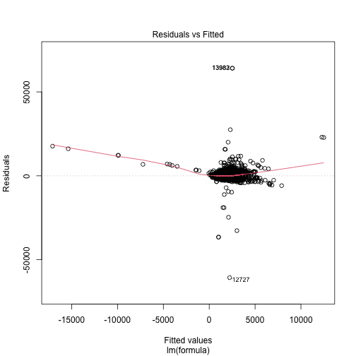

Household Income
Household Income
Household disposable income is a well known indicator of mental well-being (Graham 2009). Estimating this is a crucial instrument for the effects of many policy interventions
The output variable is monthly household disposable income. This is calculated as a composite using several variables. Rent, mortgages, and council tax are subtracted from net household income and adjusted by household size. This value is then adjusted for yearly inflation estimates.
This produces a continuous distribution of pounds per month available for a household to spend as it likes. This is plotted below with a median income of \(~£1250\).
continuous_density("hh_income")

plot of chunk hh_income_data
Methods
To estimate this variable Ordinary Least Squares (OLS) linear regression is used. This is a common technique for estimating Gaussian distributed variables that is easy to implement using base R.
Data
The formula for this linear regression is given as
Each variable included is defined as follows. Each variable with discrete values is defined in the data tables section of this documentation here.
sex. Individual’s biological sex. (Dilmaghani 2018)
ethnicity. Individual ethnicity. Discrete string values White British, Black African, etc. (Clemens and Dibben 2014)
region. Administrative region of the UK. Discrete strings such as London, North-East. (Brewer et al. 2007)
household income. Previous household income values are a strong indicator of current value. (Dilmaghani 2018)
job_sec. NSSEC code for individual’s employment. Ordinal values describing job quality. (Clemens and Dibben 2014)
labour state. Is a person employed, unemployed, student etc. Discrete states. (Dilmaghani 2018)
education state. Highest attain qualification. Ordinal values based on UK government education tiers (Eika, Mogstad, and Zafar 2019)
SF_12. Mental well-being. Continuous score indicating overall mental-wellbeing. is this an indicator of hh_income? (Viswanathan, Anderson, and Thomas 2005)
housing quality. Ordinal values indicating number of appliances in household. (Brewer et al. 2007)
Results
Model coefficients and diagnostics are displayed below. To summarise - r squared of 0.21 indicates reasonable fit. - Gender not significant. Some ethnicities see increases. Only London has higher income. High quality jobs eanr more. PT employed earn less students earn more. Housing quality strong indicator of higher income. - diagnostic plots show underdispersion. Some extreme outlier values need investigating. - overall decent fit.
##
## Call:
## lm(formula = formula, data = data, weights = weight)
##
## Weighted Residuals:
## Min 1Q Median 3Q Max
## -1990922 -13848 0 7539 3403183
##
## Coefficients:
## Estimate Std. Error t value Pr(>|t|)
## (Intercept) 412.218 194.042 2.124 0.03365 *
## age 6.291 1.038 6.060 1.39e-09 ***
## sexMale 12.256 24.496 0.500 0.61684
## factor(ethnicity)BLA 120.620 180.062 0.670 0.50294
## factor(ethnicity)BLC 361.686 202.933 1.782 0.07472 .
## factor(ethnicity)CHI 644.037 237.557 2.711 0.00671 **
## factor(ethnicity)IND 268.561 168.894 1.590 0.11183
## factor(ethnicity)MIX 457.606 178.013 2.571 0.01016 *
## factor(ethnicity)OAS 61.325 184.060 0.333 0.73900
## factor(ethnicity)OBL -5.696 458.270 -0.012 0.99008
## factor(ethnicity)OTH 262.356 241.228 1.088 0.27679
## factor(ethnicity)PAK 183.294 179.340 1.022 0.30677
## factor(ethnicity)WBI 391.118 154.627 2.529 0.01143 *
## factor(ethnicity)WHO 331.423 160.909 2.060 0.03944 *
## factor(region)East of England 56.558 54.238 1.043 0.29707
## factor(region)London 246.671 53.777 4.587 4.53e-06 ***
## factor(region)North East -30.897 67.059 -0.461 0.64499
## factor(region)North West 66.540 53.963 1.233 0.21757
## factor(region)Northern Ireland 38.943 82.628 0.471 0.63743
## factor(region)Scotland 65.676 61.669 1.065 0.28690
## factor(region)South East 45.458 51.130 0.889 0.37398
## factor(region)South West 29.053 55.642 0.522 0.60157
## factor(region)Wales 35.705 75.613 0.472 0.63679
## factor(region)West Midlands 76.644 56.114 1.366 0.17201
## factor(region)Yorkshire and The Humber 110.450 56.170 1.966 0.04927 *
## scale(hh_income) 581.992 11.532 50.468 < 2e-16 ***
## factor(job_sec)1 490.629 95.806 5.121 3.07e-07 ***
## factor(job_sec)2 389.665 82.418 4.728 2.29e-06 ***
## factor(job_sec)3 301.704 70.303 4.291 1.79e-05 ***
## factor(job_sec)4 101.444 75.271 1.348 0.17777
## factor(job_sec)5 -67.170 92.209 -0.728 0.46635
## factor(job_sec)6 179.737 85.909 2.092 0.03644 *
## factor(job_sec)7 85.658 70.806 1.210 0.22639
## factor(job_sec)8 25.167 79.558 0.316 0.75175
## factor(labour_state)Family Care 26.084 92.053 0.283 0.77691
## factor(labour_state)Maternity Leave -1.985 142.958 -0.014 0.98892
## factor(labour_state)PT Employed -110.989 42.599 -2.605 0.00918 **
## factor(labour_state)Retired 44.437 76.883 0.578 0.56328
## factor(labour_state)Self-employed 115.570 65.302 1.770 0.07679 .
## factor(labour_state)Sick/Disabled -28.306 89.746 -0.315 0.75246
## factor(labour_state)Student 198.869 72.423 2.746 0.00604 **
## factor(labour_state)Unemployed -51.936 88.115 -0.589 0.55559
## factor(education_state)1 -89.767 91.701 -0.979 0.32764
## factor(education_state)2 155.249 33.662 4.612 4.02e-06 ***
## factor(education_state)3 228.772 43.900 5.211 1.90e-07 ***
## factor(education_state)5 137.234 47.630 2.881 0.00397 **
## factor(education_state)6 265.992 37.982 7.003 2.60e-12 ***
## factor(education_state)7 416.316 44.055 9.450 < 2e-16 ***
## scale(SF_12) 29.686 15.563 1.907 0.05648 .
## factor(housing_quality)2 159.469 76.339 2.089 0.03673 *
## factor(housing_quality)3 423.238 78.000 5.426 5.84e-08 ***
## ---
## Signif. codes: 0 '***' 0.001 '**' 0.01 '*' 0.05 '.' 0.1 ' ' 1
##
## Residual standard error: 76540 on 16036 degrees of freedom
## (255 observations deleted due to missingness)
## Multiple R-squared: 0.2143, Adjusted R-squared: 0.2119
## F-statistic: 87.49 on 50 and 16036 DF, p-value: < 2.2e-16



References
Brewer, Mike, Alastair Muriel, David Phillips, and Luke Sibieta. 2007. “Poverty and Inequality in the UK: 2008.”
Clemens, Tom, and Chris Dibben. 2014. “A Method for Estimating Wage, Using Standardised Occupational Classifications, for Use in Medical Research in the Place of Self-Reported Income.” BMC Medical Research Methodology 14 (1): 1–8.
Dilmaghani, Maryam. 2018. “Sexual Orientation, Labour Earnings, and Household Income in Canada.” Journal of Labor Research 39 (1): 41–55.
Eika, Lasse, Magne Mogstad, and Basit Zafar. 2019. “Educational Assortative Mating and Household Income Inequality.” Journal of Political Economy 127 (6): 2795–835.
Graham, Hilary. 2009. Understanding Health Inequalities. McGraw-hill education (UK).
Viswanathan, Hema, Rodney Anderson, and Joseph Thomas. 2005. “Nature and Correlates of SF-12 Physical and Mental Quality of Life Components Among Low-Income HIV Adults Using an HIV Service Center.” Quality of Life Research 14 (4): 935–44.